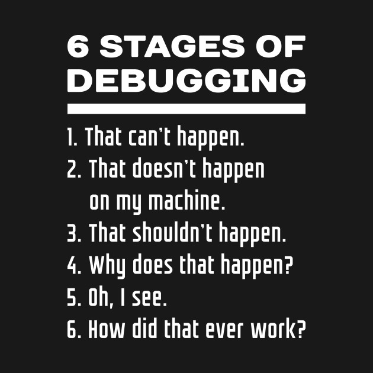

00. Link - GraphQL: A retrospective
01. Link - Writing memory efficient software applications in Node.js
02. Link - Why you should isolate Express from the rest of your Node application
03. Link - Some notes about HTTP/3
04. Link - What is HTTP/2 – The Ultimate Guide
05. Link - WebAssembly’s post-MVP future: A cartoon skill tree
06. Link - Switching to Parcel from Webpack
07. Link - Math In JavaScript Can Be Awesome - Dominic Kramer, Google
